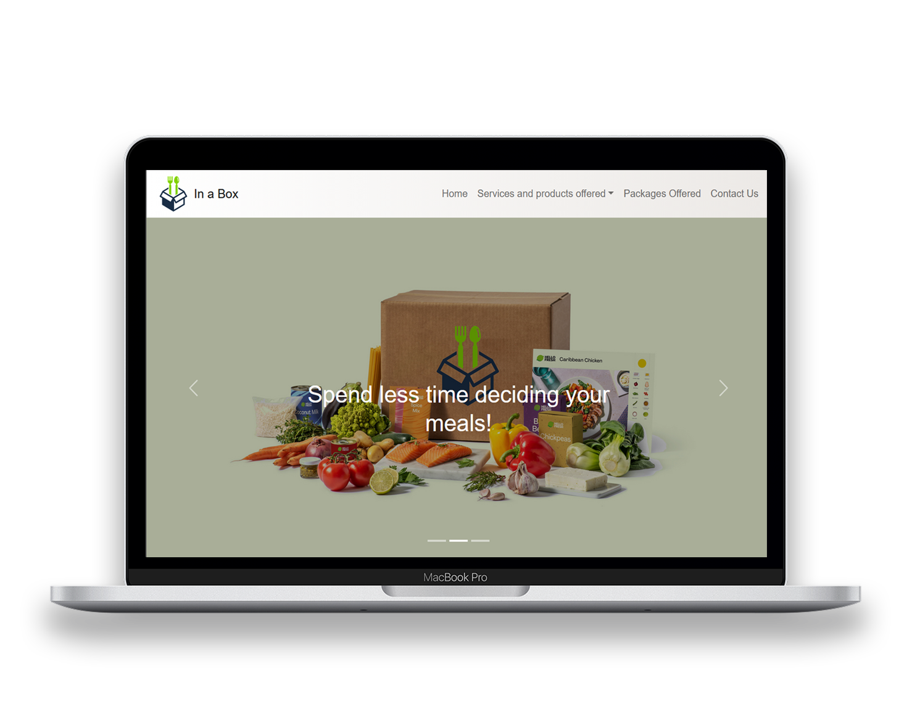
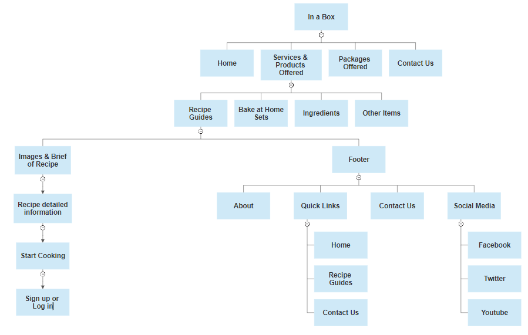
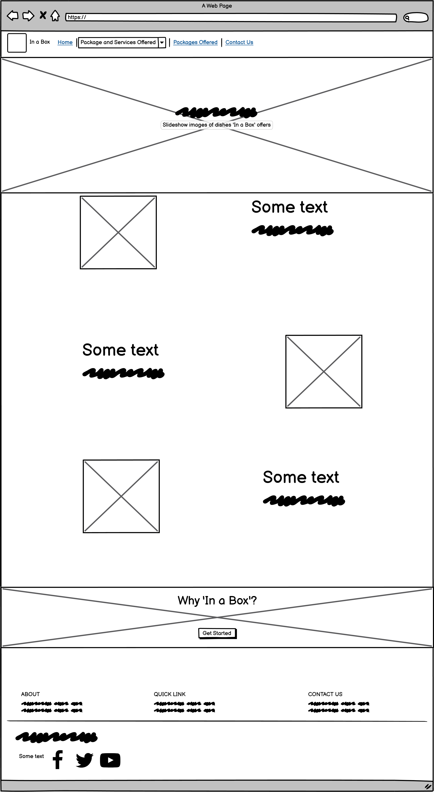

In a Box
UX/UI Design & Front-End Development
Designing a modern meal-kit browsing experience

Role
UX/UI Designer & Front-End Developer
Tools
Balsamiq, SmartDraw, HTML, CSS, Bootstrap, Sublime Text
Timeline
5 weeks

Pictured above: a quick glance of the home page and packages page for In a Box website.
Overview
In a Box is a conceptual meal-kit delivery website created for a website
development project. The goal was to design and develop a modern,
responsive platform where users could explore recipe guides, meal plans,
bake-at-home kits, ingredients, and customizable food packages.
The project focused on improving usability, accessibility, responsive layouts,
and clear navigation while creating an engaging browsing experience for users across different devices and screen sizes.
Problem
The client wanted a website that could clearly display the company’s
growing range of products and services while remaining easy to navigate
and visually appealing.
The website needed to:
- showcase recipe guides and meal kits
- organize multiple product categories clearly
- support responsive viewing across devices
- provide useful information for customers
- maintain a modern and attractive appearance
Competitive Analysis
Before designing the website, I analyzed existing meal-kit services including HelloFresh and Blue Apron to understand how successful platforms structure navigation, layouts, responsiveness, and product discovery.
HelloFresh
Strengths
- Clean and visually engaging layout
- Strong branding and consistent color palette
- Clear call-to-action buttons
- Responsive mobile experience
Weaknesses
- Some navigation items disappeared on tablet view
- No search functionality for recipes
Blue Apron
Strengths
- Consistent responsiveness across browsers and devices
- Organized navigation structure
- Clear meal categorization
Weaknesses
- Limited filtering and search functionality
- Fewer customization options compared to competitors
These observations helped guide my own design decisions, especially around responsive navigation, category organization, and visual consistency.
Information Architecture
To organize the website’s large amount of content, I created a sitemap that
structured the website into clear categories including recipe guides,
bake-at-home sets, ingredients, packages, and contact pages.
The structure was designed to help users quickly browse different product
categories while maintaining simple and intuitive navigation.
Home Page Site Map

Additional User Flows
Home
1/7
Wireframing
Low-fidelity wireframes were created to plan content hierarchy, page
layouts, navigation placement, and user interactions before development began.
The wireframes focused on:
- clear visual hierarchy
- card-based layouts
- responsive spacing
- accessible navigation
- consistent footer and menu placement

Final Website
After completing the planning and wireframing stages, the final website was developed with a focus on usability, organization, and responsive design. The final implementation transformed the low-fidelity wireframes into a polished browsing experience with improved navigation and visual consistency across pages.
TRY ME
Interactive preview of the completed responsive website.
Reflection
Working on this project helped me better understand the relationship between visual organization and usability in web design. Through building the sitemap, wireframes, and final website, I learned how small layout and navigation decisions can significantly impact the user experience. This project also gave me more confidence in combining both design planning and front-end development using HTML and CSS.